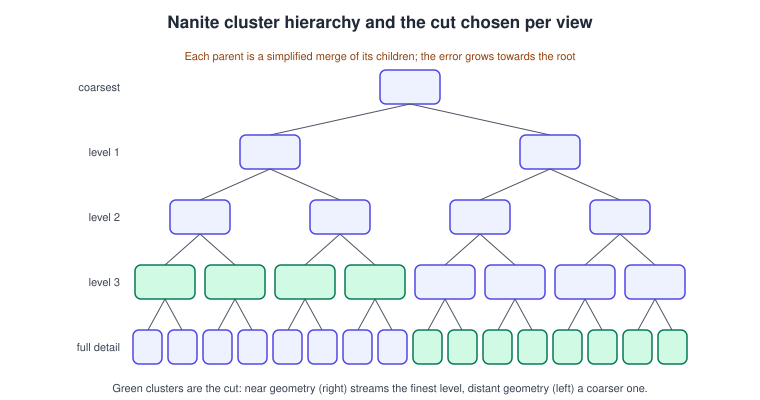
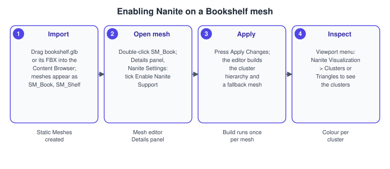

Nanite and Virtual Geometry
|
This content was generated with the assistance of AI and should be verified against the official documentation before being relied on in production. |
Nanite is Unreal Engine’s virtualized geometry system. It lets you import a mesh of millions of triangles, place thousands of copies of it, and never author a level-of-detail (LOD) chain: the engine splits the mesh into small clusters of triangles, keeps a hierarchy of simplified versions of those clusters, streams in only the clusters that matter for the current view, and draws them in its own rendering pass instead of through ordinary draw calls. For the Bookshelf this means the leather book mesh, the shelf boards with their carved edges and the desk clutter in L_Library can be modelled for the closest camera and never be revisited.
The facts on this page were checked in November 2026 against the Unreal Engine 5.8 documentation (5.8 was released on 2026-06-17, and the latest hotfix found is 5.8.4). The Nanite pages of the documentation are written for the editor on Windows, macOS and Linux with a DirectX 12 or equivalent Shader Model 6 class GPU; other platforms and the mobile renderer are covered in the limits section. This is the geometry half of the rendering story. The frame as a whole is in Rendering Overview, the way Nanite meshes are shaded in Materials and the Material Editor, and the way they cast shadows and receive bounced light in Lighting, Lumen and MegaLights. The engine-neutral theory of meshes, vertices and LOD is in Meshes and Vertex Data. The Bookshelf model is the shared bookshelf.glb, imported with Interchange as SM_Book and SM_Shelf.
The idea: clusters, a hierarchy and a cut

Classic LOD works per object: an artist builds LOD0 to LOD3, and the engine switches the whole mesh when the object’s screen size crosses a threshold. The switch is visible (popping), the chain costs authoring time and memory, and a huge object such as a cliff is either all detailed or all coarse. Nanite works per cluster instead.
-
On import the mesh is analysed and divided into hierarchical clusters of triangle groups. Groups of clusters are merged and simplified to build the next, coarser level, and this repeats until a single root remains. The result is a directed graph rather than a chain of separate meshes.
-
At render time the engine walks this graph for each view and picks, for every part of the surface, the cluster whose simplification error would be about one pixel on screen. The set of chosen clusters is the cut through the hierarchy. A part of the mesh near the camera gets fine clusters, a part far away gets coarse ones, and both belong to the same object.
-
Clusters at different levels connect without cracks, because simplification keeps the borders between groups locked until the groups themselves are merged. This is why a single mesh can show several levels of detail at once without visible seams.
-
Data streams on demand. Only the clusters that the current views need are resident in memory, and the engine requests more as the camera moves. The documentation describes this as keeping only visible detail in memory.
The cluster size and the exact error metric are implementation details that Epic’s pages do not specify, and they have changed between releases; treat the figure as a model of the idea. The practical consequences are: triangle count stops being the main cost (pixels and instances are), there is no LOD popping, and you do not set LOD screen sizes for Nanite meshes.
Why it is not just "high-poly LOD"
Nanite also changes how geometry is drawn. The engine culls clusters on the GPU against the view and against a hierarchical depth buffer of the previous frame, then rasterizes the survivors with a mix of hardware and software rasterization (the software path is used for triangles that are only a few pixels large, where the fixed-function hardware is inefficient). The output is a visibility buffer: for each pixel, the ID of the triangle that covers it. Materials are then evaluated for the pixels that need them, grouped in shading bins, rather than per triangle during rasterization. These details are visible in the debug views described below (Raster Bins and Shading Bins), but you cannot configure the algorithm.
The documentation states the headline behaviour plainly: Nanite runs its own pass that bypasses traditional draw calls. That is why a scene of ten thousand books costs far fewer CPU draw calls than the same scene with ordinary static meshes, and why per-draw features such as custom depth stencil write order or per-object forward-shading tricks do not carry over.
What Nanite can render
Supported assets and components
Nanite applies to Static Meshes and Geometry Collections (the Chaos destruction asset), and Nanite Skeletal Meshes are supported too. The components that can draw Nanite geometry are the static mesh, skeletal mesh, instanced static mesh, spline mesh, hierarchical instanced static mesh, geometry collection, foliage painter and landscape grass components. In the editor you enable it per asset: open the mesh, find Nanite Settings in the Details panel and tick Enable Nanite Support, or select many assets in the Content Browser and enable it for all of them at once. You can also make it the default for newly imported static meshes in the import settings (see the Nanite entry under Project Settings > Engine > Rendering).
Materials
| Material feature | Behaviour with Nanite |
|---|---|
Blend Mode Opaque |
Fully supported and the fast path. |
Blend Mode Masked |
Supported, but evaluating the mask costs more than opaque, and masked leaves are the classic overdraw problem. Keep masks to the surfaces that need them. |
Blend Mode Translucent (and Additive, Modulate) |
Not supported. A Nanite mesh whose material is not supported falls back to a default material and the Output Log prints a warning. Use a non-Nanite mesh for glass, or accept the fallback. |
Mesh Decals |
Not supported because they need a translucent material. Projected (deferred) decals do work on Nanite surfaces. |
World Position Offset |
Supported, with limits (see below). |
Pixel Depth Offset, Vertex Interpolators, Custom UVs |
Supported. Vertex Interpolator and Custom UV expressions are evaluated per pixel (three times per pixel, the documentation says), so heavy expressions are costly. |
Custom expression nodes |
May cause artifacts, and so may material functions that use them, for example parallax occlusion mapping. |
Wireframe |
Not supported. |
The Bookshelf’s M_Book and its instance MI_Book_Leather (see Materials and the Material Editor) are opaque, so the shared model works unchanged. Substrate materials follow the same rules as classic ones for the blend-mode question.
Deformation
Rigid motion is free: Nanite meshes can be translated, rotated and non-uniformly scaled dynamically, which is how a book slides out of the shelf. World Position Offset works, but each displaced cluster is culled on its own, so a large offset can make clusters pop out of view when their bounds no longer match their displaced shape. Clamp the displacement; the documentation notes that foliage is less affected. Morph targets are not supported. Skeletal Nanite meshes use animation-driven deformation and animation LODs rather than the static cluster scheme, draw with one call per mesh and cast Virtual Shadow Map shadows.
Mesh settings in the editor
Nanite settings are stored per asset and appear in the Nanite Settings section of the Static Mesh editor (and the Skeletal Mesh and Geometry Collection editors). Changes need Apply Changes, which rebuilds the Nanite data.
| Setting | What it does |
|---|---|
Enable Nanite Support |
Builds the cluster hierarchy for the mesh. Also lets you decide what happens to the lightmap UV channel: if you do not use baked lighting, turn off Generate Lightmap UVs in the build settings, since Nanite meshes do not need it. |
Position Precision |
Quantization of the vertex positions in the Nanite data. Auto picks a value from the size and triangle density of the mesh; an explicit value trades disk size and memory against positional accuracy. |
Keep Triangle Percent |
The share of source triangles that Nanite keeps. Lowering it makes the asset smaller on disk and loses detail permanently. |
Trim Relative Error |
How much relative error may be removed from the source, a unitless value scaled to the mesh size. It trims fine detail from the stored Nanite data. |
Fallback Target |
How the fallback mesh is sized: Auto, Fallback Triangle Percent or Fallback Relative Error. |
Fallback Relative Error |
The fallback mesh is simplified until this error, relative to the size of the mesh, is reached. The fallback is used for ray tracing and when Nanite is disabled or unsupported, so a very coarse fallback can give self-intersection artifacts in ray-traced effects. |
Preserve Area |
Redistributes the area lost to simplification by dilating open boundary edges. The documentation says it should be on for foliage meshes and nothing else. |
Displacement UV Channel, Displacement Maps |
The UV channel sampled by displacement maps and the list of those maps (see tessellation below). |
Max Edge Length Factor |
Limits the distance in screen space between vertices, which stops over-simplification of deformed meshes. Leave it at 0 unless needed. |
A fallback mesh exists for every Nanite mesh, and the two kinds of use matter: hardware ray tracing (including the ray-traced parts of Lumen) traces the fallback mesh by default, while the screen-space and distance-field parts of Lumen see the visible Nanite geometry. If you see light leaking through a thin wall, lower Fallback Relative Error on that wall’s mesh.
Source: Nanite Technical Details
Procedure: enable Nanite on the Bookshelf meshes

-
Import
bookshelf.glb(or a converted FBX) so thatSM_BookandSM_Shelfappear in the Content Browser. -
Double-click
SM_Book. In the Details panel open Nanite Settings and tick Enable Nanite Support. -
Press Apply Changes. The editor builds the cluster hierarchy and the fallback mesh; large meshes take a moment, and the result is cached in the Derived Data Cache.
-
In the level viewport open the Nanite Visualization menu in the view-mode list and choose Clusters (or Triangles, Overdraw). Moving the camera shows clusters changing at the cut. The view mode Mask shows which pixels are drawn by Nanite at all.
-
Repeat for
SM_Shelf. To convert many assets, select them in the Content Browser and enable Nanite for all of them from the context menu.
Should this mesh be Nanite?
The usual rule in current projects is to enable Nanite by default for opaque static geometry, large or small, and to opt out for the exceptions in the chart. Very small meshes that are few on screen gain little, and meshes with a few dozen triangles gain nothing because the fixed cost of the Nanite pass is not recovered; the documentation advises measuring instance counts, triangles per mesh, material complexity and performance for each combination of content and hardware rather than assuming a win.
Foliage, landscapes, splines and tessellation
Nanite foliage
Foliage is difficult for cluster-based geometry because leaves are thin, numerous and animated. The documentation lists the foundations of Nanite foliage as instancing, skinned meshes, voxelization and animation. Nanite foliage arrived in UE 5.7 and was built on those elements; in 5.8 the experimental Procedural Vegetation Editor creates vegetation meshes with Nanite foliage support. When you import your own foliage keep Preserve Area enabled on those meshes, because without it simplification thins leaves until the canopy looks transparent at a distance.
Landscape and splines
Nanite can be enabled for landscape terrain, which pairs well with Virtual Shadow Maps, and spline meshes are supported by default on Nanite meshes, including landscape splines and Blueprint splines. The 5.8 release notes add the experimental Mesh Terrain, a mesh-based terrain system for large worlds that uses Nanite and variable tessellation to replace heightfield-only landscapes (see World Partition and PCG for the world-building side).
Static displacement and runtime tessellation
Two features add detail to Nanite meshes from a displacement map. Static Displacement Mapping uses an offline adaptive tessellator that bakes the displacement into the Nanite mesh, so the cost is paid at build time. Tessellation is runtime and programmable: displacement comes from a displacement map or a procedural material and is evaluated by the Nanite pass. Neither replaces normal maps for fine surface texture; use them where silhouettes need real geometry, such as the carved edge of a shelf board. Both are enabled through the Nanite and material settings of the project and mesh, and the Pixel Programmable Tessellation debug view shows where tessellation runs.
Debug views, statistics and console variables
| Tool | Use |
|---|---|
Nanite Visualization view modes |
Mask, Triangles, Patches, Clusters, Primitives, Instances, Overdraw, Lightmap UV, Evaluate WPO, Pixel Programmable Tessellation, Raster Bins and Shading Bins. Set |
|
Prints culling statistics in the viewport. Arguments include |
|
Disables Nanite globally at runtime, the quickest way to compare cost and appearance with the fallback meshes. |
|
Values 0, 1 and 2 control how fallback geometry is drawn when Nanite is disabled or unsupported. |
|
Memory for Nanite streaming data. A bigger pool reduces IO and decompression but costs memory; a pool that is too small thrashes the cache. |
|
Sizes of the candidate and visible cluster buffers (12 and 16 bytes per cluster respectively). They cannot change at runtime and must be set in an |
|
The value 1 enables experimental native ray tracing of Nanite meshes instead of the fallback mesh. |
Source: Nanite Technical Details
Complete C++ examples for the Bookshelf
The Bookshelf’s ABookActor (introduced in Actors and Components) owns a static mesh. The first example adds a development check that logs whether the mesh really is Nanite, and the second shows how to read and set the Nanite console variables from code and from a configuration file. Both live in the Bookshelf module (API macro BOOKSHELF_API, log category LogBookshelf).
Logging Nanite status from ABookActor
// BookActor.h
#pragma once
#include "CoreMinimal.h"
#include "GameFramework/Actor.h"
#include "BookActor.generated.h"
class UStaticMeshComponent;
class URotatingMovementComponent;
UCLASS()
class BOOKSHELF_API ABookActor : public AActor
{
GENERATED_BODY()
public:
ABookActor();
protected:
virtual void BeginPlay() override;
UPROPERTY(VisibleAnywhere, BlueprintReadOnly, Category = "Book")
TObjectPtr<UStaticMeshComponent> Mesh;
UPROPERTY(VisibleAnywhere, BlueprintReadOnly, Category = "Book")
TObjectPtr<URotatingMovementComponent> RotatingMovement;
};// BookActor.cpp
#include "BookActor.h"
#include "Components/StaticMeshComponent.h"
#include "Engine/StaticMesh.h"
#include "GameFramework/RotatingMovementComponent.h"
DECLARE_LOG_CATEGORY_EXTERN(LogBookshelf, Log, All);
ABookActor::ABookActor()
{
PrimaryActorTick.bCanEverTick = false;
Mesh = CreateDefaultSubobject<UStaticMeshComponent>(TEXT("Mesh"));
SetRootComponent(Mesh);
RotatingMovement = CreateDefaultSubobject<URotatingMovementComponent>(TEXT("RotatingMovement"));
RotatingMovement->RotationRate = FRotator(0.0, 45.0, 0.0);
}
void ABookActor::BeginPlay()
{
Super::BeginPlay();
const UStaticMesh* StaticMesh = Mesh->GetStaticMesh();
if (StaticMesh == nullptr)
{
UE_LOG(LogBookshelf, Warning, TEXT("%s has no static mesh assigned."), *GetName());
return;
}
// HasValidNaniteData reports the per-asset result of the build; bDisallowNanite is the per-component opt-out.
UE_LOG(LogBookshelf, Log, TEXT("%s uses %s, Nanite data: %s, component opt-out: %s"),
*GetName(), *StaticMesh->GetName(),
StaticMesh->HasValidNaniteData() ? TEXT("yes") : TEXT("no"),
Mesh->bDisallowNanite ? TEXT("yes") : TEXT("no"));
}Source: UStaticMesh API reference and Actors in Unreal Engine
The check is useful in a test map that must catch a mesh imported without Nanite data, or a component that opts out with Disallow Nanite: run it from an automation test (see Testing and Automation) over every ABookActor in L_Library. The log-category declaration normally sits in a shared header of the module and its definition in one source file, as shown in Unreal C++ Idioms.
Reading and changing Nanite console variables
// BookshelfRenderDebug.h
#pragma once
#include "CoreMinimal.h"
#include "Kismet/BlueprintFunctionLibrary.h"
#include "BookshelfRenderDebug.generated.h"
UCLASS()
class BOOKSHELF_API UBookshelfRenderDebug : public UBlueprintFunctionLibrary
{
GENERATED_BODY()
public:
/** Switches Nanite on or off for the whole game at runtime, to compare against fallback meshes. */
UFUNCTION(BlueprintCallable, Category = "Bookshelf|Debug")
static void SetNaniteEnabled(bool bEnabled);
/** Returns the current value of r.Nanite, or false if the variable does not exist. */
UFUNCTION(BlueprintPure, Category = "Bookshelf|Debug")
static bool IsNaniteEnabledGlobally();
};// BookshelfRenderDebug.cpp
#include "BookshelfRenderDebug.h"
#include "HAL/IConsoleManager.h"
DECLARE_LOG_CATEGORY_EXTERN(LogBookshelf, Log, All);
void UBookshelfRenderDebug::SetNaniteEnabled(bool bEnabled)
{
IConsoleVariable* Variable = IConsoleManager::Get().FindConsoleVariable(TEXT("r.Nanite"));
if (Variable == nullptr)
{
UE_LOG(LogBookshelf, Warning, TEXT("Console variable r.Nanite was not found."));
return;
}
// Console variables set from code carry a priority; ECVF_SetByCode wins over the ini files.
Variable->Set(bEnabled ? 1 : 0, ECVF_SetByCode);
UE_LOG(LogBookshelf, Log, TEXT("r.Nanite set to %d"), bEnabled ? 1 : 0);
}
bool UBookshelfRenderDebug::IsNaniteEnabledGlobally()
{
const IConsoleVariable* Variable = IConsoleManager::Get().FindConsoleVariable(TEXT("r.Nanite"));
return Variable != nullptr && Variable->GetInt() != 0;
}Source: IConsoleManager API reference and Console Variables C++ in Unreal Engine and Nanite Technical Details
The same effect is available in Blueprint with the Execute Console Command node (r.Nanite 0), or in the console while playing. Variables that cannot change at runtime, such as the cluster buffer sizes, go into the project’s configuration instead:
; Config/DefaultEngine.ini
[SystemSettings]
; Example value only: raise the pool when the log shows Nanite streaming starvation.
r.Nanite.Streaming.StreamingPoolSize=512
; Set only if NaniteStats shows the buffers overflowing.
r.Nanite.MaxCandidateClusters=8388608Source: Nanite Technical Details
The numbers above are illustrations; the defaults and the useful range depend on the engine version and the content, so read the current value with the console (type the variable name without a value) before changing it.
Limits and platform support
-
Hardware. The documentation lists current console and desktop platforms, using DirectX 12 with Shader Model 6 and recent graphics drivers on Windows. For the recommended Windows hardware of 5.8 see Versions, Licensing and History. For mobile targets check the current Nanite page and the mobile renderer notes before relying on it; see Android and Mobile.
-
Not supported with Nanite: view-specific filtering such as Minimum Screen Radius and distance culling, Forward Rendering, VR stereo, MSAA, and Lighting Channels. Several of these decide the choice of renderer for a VR project (see Rendering Overview).
-
Instances. Up to 16 million instances can be streamed in, counting all streamed instances.
-
Tangents. Per-vertex tangents are not stored; tangents are derived in the pixel shader, which matters for normal maps authored against custom tangents.
-
Ray tracing uses the fallback mesh by default.
-
Visualization. Some visualization modes do not display Nanite meshes, and showing normals or UVs on very dense meshes can slow the Static Mesh editor.
Common mistakes
-
Putting a translucent material on a Nanite mesh. It silently falls back to a default material and only the Output Log mentions it. Check the log after changing materials.
-
Expecting LOD settings to matter. Static meshes with Nanite ignore the LOD chain; fixing popping with LOD distances does nothing. Skeletal Nanite meshes use animation LODs.
-
Leaving Preserve Area on for everything. The documentation says foliage only; on solid meshes it dilates borders and shows as wrong silhouettes.
-
Over-trimming. Lowering Keep Triangle Percent or raising Trim Relative Error removes detail permanently and cannot be recovered without reimporting.
-
Large World Position Offset. Clusters are culled with their undisplaced bounds adjusted only by the clamp, so big offsets make geometry vanish.
-
Heavy masked foliage. Masked leaves with many overlapping layers create overdraw; check the Overdraw view.
-
Assuming the fallback mesh is the Nanite mesh. Ray-traced reflections and shadows may show the coarser fallback; tune Fallback Relative Error.
-
Forgetting the Nanite-unsupported features. A project that needs MSAA, Forward Rendering or VR stereo cannot use Nanite for its visible geometry.
-
Setting buffer variables at runtime.
r.Nanite.MaxCandidateClustersandr.Nanite.MaxVisibleClustersare read from the.inifile only.
Performance notes
-
Nanite moves cost from triangle count to pixel count, instance count and material complexity. A dense mesh is cheap; a complicated pixel-shader material over the whole screen is not.
-
Check Overdraw and Shading Bins: many different materials in view create many bins, so share materials and use material instances, as in the Bookshelf where all books share
M_Book. -
Use
NaniteStatsto see how many clusters are processed per view and for shadows. Virtual Shadow Maps over Nanite geometry are the usual way to get detailed shadows cheaply (see Lighting, Lumen and MegaLights). -
Keep the streaming pool large enough that you do not see missing detail when turning quickly, and no larger than the memory budget of the platform.
-
Disabling Generate Lightmap UVs on meshes that do not use baked lighting reduces build time and data size.
-
Compare with
r.Nanite 0to confirm that the feature is a win for your content, and capture a frame with the tools in Profiling and Optimization.
What changed recently
| Version | Change |
|---|---|
UE 5.0 |
Nanite introduced for static meshes, with Opaque and Masked materials. The properties Keep Triangle Percent and Trim Relative Error appear in the release notes of that version. |
UE 5.7 (2025-11-12) |
Nanite Foliage, built on instancing, skinned meshes, voxelization and animation. |
UE 5.8 (2026-06-17) |
Experimental Mesh Terrain (Nanite with variable tessellation), experimental Fast Geometry Streaming (with light component and mesh paint texture support added over 5.6), the experimental Procedural Vegetation Editor with Nanite foliage support, a Nanite build settings schema for USD import through Interchange, and Nanite as one of the ways MetaHuman Crowd is rendered. |
See also
-
Rendering Overview: where the Nanite pass sits in the frame and which renderers support it.
-
Materials and the Material Editor: blend modes and what Nanite accepts.
-
Lighting, Lumen and MegaLights: Lumen, Virtual Shadow Maps and the fallback mesh.
-
World Partition and PCG: streaming huge levels of Nanite assets.
-
Profiling and Optimization: GPU profiling and
statcommands. -
Meshes and Vertex Data and Advanced Pipeline Stages: engine-neutral LOD, meshlets and mesh shading.
-
Mesh and Task Shaders (Vulkan): the API feature family that cluster rendering resembles.
-
Performance and Profiling: general GPU cost model.